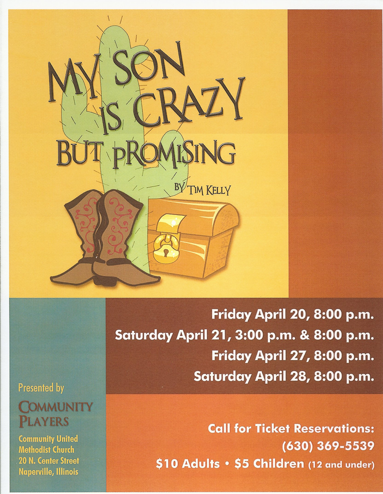

For Christian Women... Reprise!
In case you missed Carol's performance in For Christian Women Who Have Considered Giving Up When Life Is Too Much back in July (or maybe you just want to see it again), you now have one more chance! Performance will be…
It's Murder!
The Gallery Theater in West Chicago presents Murder by the Book, which will feature our favorite actress. The Raven Society is holding its annual meeting to select the best mystery book of the year for the coveted…
Tales Tombstones Tell 2012
It's that time of year again! That means it is time to visit the Oakwood Cemetery to see our favorite actress telling tales of some of its notable residents. [missing image] IMG0111.JPG original:…
An Evening (or Two) of Scenes
Greetings Fans! It has been too long since our last update. In an attempt to rectify that atrocity... If you are free this Friday or Saturday, drop by Gallery Theater in West Chicago for an Evening of Scenes. Rather…
For Christian Women ...
FCWWHCGUWLITM
It's starting off to be a busy summer with Carol appearing in the graveyard on June 30th, and now in another upcoming show starting June 15th. Harvest Productions will be presenting For Christian Women Who Have…
When was the War of 1812?
This, and other thought-provoking questions will be answered during a presentation commemorating the bicentennial anniversary of the War of 1812 in West Chicago. Come out to the Oakwood Cemetery for an evening of…

My Son Is Crazy... But Promising
Greetings fans! It's Spring, and it's time for a new show. We had to miss our annual trip to Thunder Over Louisville this year, as Carol has been cast in My Son Is Crazy But Promising, with the Naperville Community…
A Not So Ordinary Woman
Greetings fans! It's been so long, I almost forgot how to post new entries on the blog! You might think this post title is referring to our own Carol-- and of course you would be right! But in this case, it is also the…
1 commentCats with Frickin' Laser Beams!
Let's face it... cats LOVE lasers! Perhaps it is their love of the chase, or perhaps it is their desire to rule the world and enslave us all. But either way, it's hilarious to watch! You love your cat, but who has the…